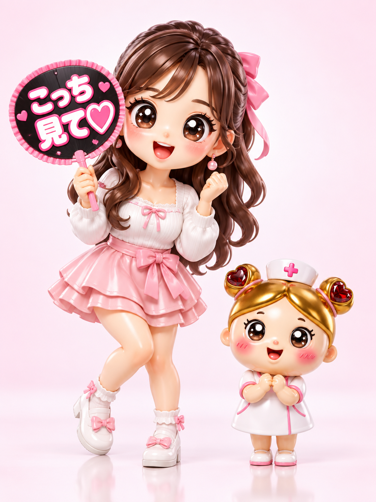
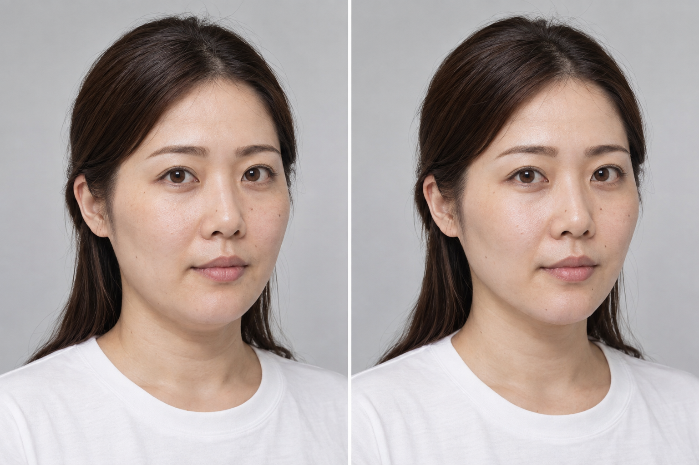

推しに会う日の、
私がいちばん好き。
「こっち見て♡」を、もっと自信を持って。

まずは、施術が自分に合うか知ることから。
推しへの気持ちはそのまま。
顔まわり、気になってきた？
- 現場の写真で、頬のもたつきに目がいく
- うちわで、ついフェイスラインを隠す
- 若いファンに負けたくない、と思う日も
- 推しに「かわいい」と思われたい！
次の現場も、思いっきり楽しみたい。
その気持ちから、ケアを考えよう。
気になり始めた今、
自分に合うケアを知ろう。
メイクや髪型を選ぶように、フェイスラインの悩みも、まずは相談から。年齢だけで施術を決めず、今の状態と希望を医師と確認することが大切です。
糸リフトが将来のたるみを確実に予防するわけではありません。施術を受けない選択も含めて検討します。
糸リフトって、
どんな施術？
医療用の糸を皮下に挿入し、頬やフェイスラインのたるみを引き上げることを目的とした施術です。
気になる顔まわりにアプローチ
頬のもたつきや輪郭の悩みを確認。骨格や皮膚の状態によって、適した方法は異なります。
「なりたい印象」を言葉に
正面も、横顔も。希望する変化と、施術でできること・できないことをすり合わせます。
推し活の予定も、一緒に相談
ライブや特典会の日程を伝えて、回復期間を含めたスケジュールを確認します。
なりたい印象を、
イメージしてみる。
AI生成の比較イメージ・実際の症例ではありません
大切な現場のために。
予定には、余裕を。
腫れ・内出血・痛み・ひきつれが生じることがあります。回復の経過には個人差があり、イベントに間に合うとは約束できません。
予約前に伝えたいこと
現場の日程 ／ 気になる部位 ／ 予算
直前の施術は避け、医師と相談しながら無理のない日程を考えましょう。
はじめてでも、
一つずつ確認。
- 01 悩みと希望を相談
気になる部位、理想の印象、推し活の予定を整理します。
- 02 医師が適応を判断
施術の必要性、他の選択肢、リスクや回復期間を確認します。
- 03 内容と総額に納得してから
糸の種類・本数・麻酔代などを含む見積もりを確認して判断します。
受ける前に、
知っておきたいこと。
- 施術内容
- 医療用の糸を皮下に挿入し、たるみの引き上げを目指す施術。
- 費用
- 自由診療（保険適用外）。制作上の仮設定：4本100,000円 → WEB予約特典60,000円（税込、施術代・局所麻酔代・診察料込み）。実際の料金・割引ではありません。
- 主なリスク・副作用
- 腫れ、内出血、痛み、ひきつれ、左右差、感染、糸の露出、神経障害など。
- 効果・回復期間
- 効果や持続期間、回復の経過には個人差があります。希望する変化が得られない場合もあります。
推しに会う日の、私へ。
WEB予約特典
通常価格 100,000円（税込）
60,000円（税込）
仮設定：施術代・局所麻酔代・診察料込み
価格・割引はポートフォリオ用の架空設定です。
対象：本ページから予約し、医師が適応と判断した方の糸リフト4本プラン。他の割引との併用不可。追加施術は対象外です。
予約のみで施術が決まるわけではありません。糸の種類・本数や総額は、診察時に確認します。
このページは制作サンプルです。表示の通常価格に販売実績はなく、実際の販売・割引・予約受付は行っていません。
気になること、聞いてみよう。
30代前半でも、相談していい？
年齢だけで施術の適応は決まりません。気になることがあれば、皮膚や脂肪の状態を診察で確認し、自分に合う方法を相談しましょう。
ライブの直前に受けられる？
腫れや内出血などが残る可能性があるため、直前の施術は避けましょう。必要な余裕は施術内容と経過で異なります。予定を医師に伝えて確認してください。
痛みやダウンタイムはある？
痛み、腫れ、内出血、ひきつれなどが生じることがあります。麻酔を使っても痛みがないとは限りません。仕事やイベントへの影響も事前に確認しましょう。
一度受ければ、ずっと続く？
効果は永久ではありません。糸の種類や肌の状態によって持続期間が異なり、将来のたるみを確実に防ぐ施術ではありません。
相談したら、必ず施術するの？
施術を受けるかは、説明を聞いたうえで自分で決めることです。必要性・費用・リスクに納得できない場合は、その場で決めずに持ち帰って検討しましょう。
次の「こっち見て♡」は、
もっと自分を好きな私で。
推しに会う日も、なんでもない日も。
私のための美容を、ここから。
制作サンプルの予約画面が開きます。